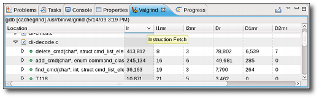
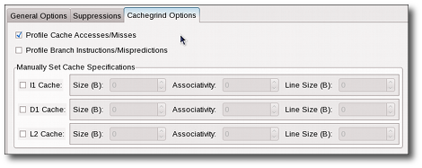

| Using Cachegrind | ||
|---|---|---|
|
|
|
|
| Using Massif | Using Helgrind | |
Cachegrind performs cache and branching profiling. A Cachegrind profile run measures the number of cache misses and branch mispredictions performed by an application. Cachegrind collects the following statistics:
To use Cachegrind, navigate to Profile As > Profile Configurations to access the
Profile Configurations
menu. Open the
Valgrind Options
tab and choose Cachegrind from the
Tool to run:
drop-down list.

The results of a Cachegrind profile run are displayed in the Valgrind view. These results show Cachegrind's cache/branch data in different levels of granularity. Double-clicking on any file, function, or line will open the corresponding source file and place the cursor on the appropriate location (if the source can be resolved).

To configure a Massif profile run, navigate to Profile As > Profile Configurations to access the
Profile Configurations
menu. In the
Valgrind Options
tab, navigate further to
Cachegrind Options
.

The Cachegrind Options tab allows you to configure the following Cachegrind options:
--cache-sim=, which specifies whether or not to collect cache accesses and miss counts. This option is enabled by default.
--branch-sim=, wich specifies whether or not to collect branch instruction and misprediction counts. This option is disabled by default.
For more information about each Cachegrind option in the Valgrind plug-in for Eclipse, refer to man valgrind.
|
|

|
|
| Using Massif | Using Helgrind |